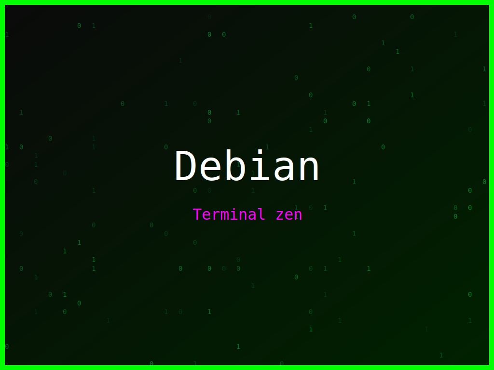

<section class="post-content">


    <div class="details-container">
        
        
        <ul class="details-list">
            <li><strong>Autor:</strong> piolinux</li>
            <li><strong>Descrição:</strong> Design Debian com uma mensagem sobre o terminal, para os que preferem a linha de comando.</li>
            <li><strong>Distro:</strong> Debian</li>
            <li><strong>Frases:</strong> CLI forever, Terminal zen, Compile success</li>
            <li><strong>Tags:</strong> matrix, colorido</li>
        </ul>
        <a href="../galeria.html">Voltar para a galeria</a> ||
        <a href="../wallpaper48.svg" download="wallpaper-debian-meditação-do-terminal.svg">Baixar Wallpaper</a>
    </div>

</section>
